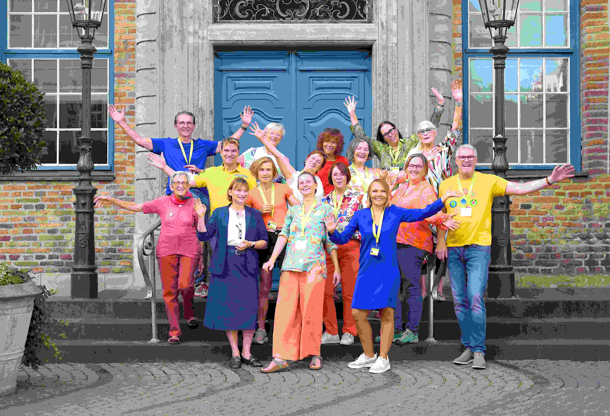
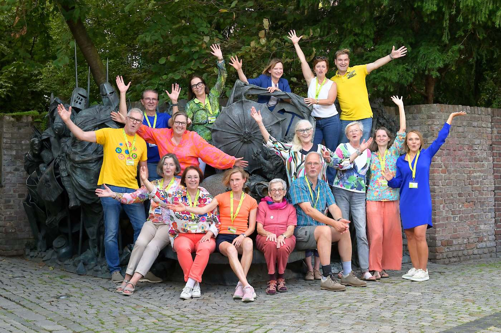
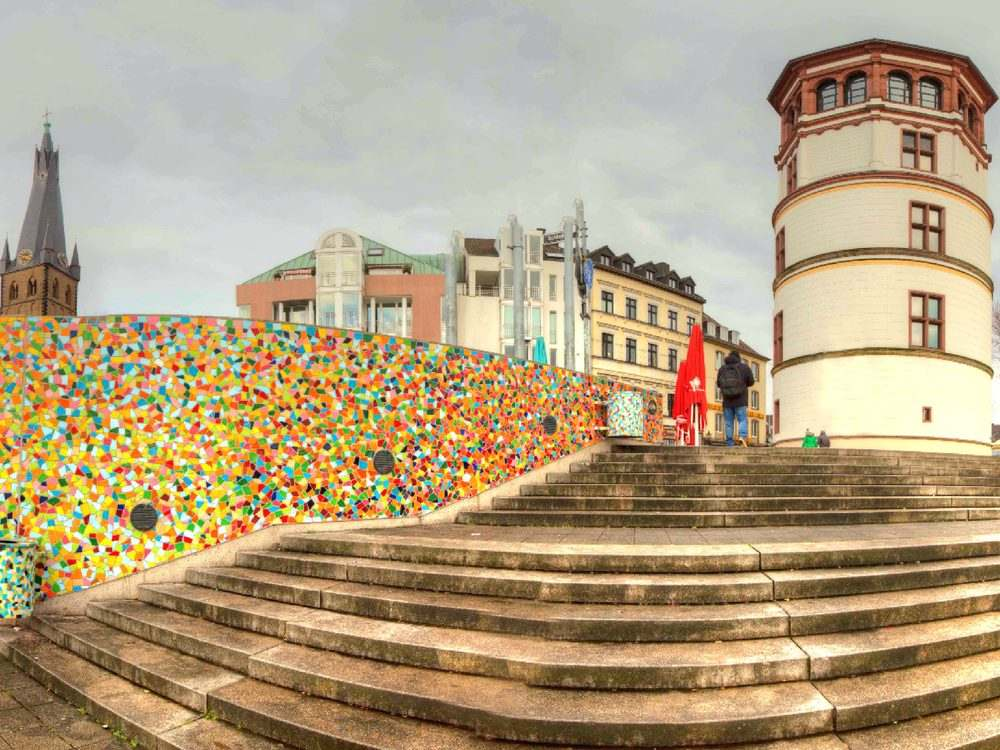

Die Düsseldorf Insider · seit 1997
Düsseldorf erklärt von Menschen,
die hier zu Hause sind.
Persönlich. Kompetent. Mit Leidenschaft. Wir zeigen Ihnen die schönsten Seiten unserer Stadt – und die Geschichten dahinter.
Unsere beliebtesten Führungen
Unsere Top 10
Unsere Bestseller auf einen Blick. Wir passen Startpunkt, Ende und Dauer gerne an Ihre Wünsche an.
Die Detailseiten gibt es nur auf Deutsch.
-
 Bild fehlt
bilder/tour-01-altstadt.jpg
Bild fehlt
bilder/tour-01-altstadt.jpg
-
 Bild fehlt
bilder/tour-02-neue-mitte.jpg
Bild fehlt
bilder/tour-02-neue-mitte.jpg
-
 Bild fehlt
bilder/tour-03-medienhafen.jpg
Bild fehlt
bilder/tour-03-medienhafen.jpg
-
 Bild fehlt
bilder/tour-04-highlights.jpg
Bild fehlt
bilder/tour-04-highlights.jpg
-
 Bild fehlt
bilder/tour-05-kulinarisch.jpg
Bild fehlt
bilder/tour-05-kulinarisch.jpg
-
 Bild fehlt
bilder/tour-06-altbier.jpg
Bild fehlt
bilder/tour-06-altbier.jpg
-
 Bild fehlt
bilder/tour-07-klein-tokio.jpg
Bild fehlt
bilder/tour-07-klein-tokio.jpg
-
 Bild fehlt
bilder/tour-08-kaiserswerth.jpg
Bild fehlt
bilder/tour-08-kaiserswerth.jpg
-
 Bild fehlt
bilder/tour-09-nachtwaechter.jpg
Bild fehlt
bilder/tour-09-nachtwaechter.jpg
-
 Bild fehlt
bilder/tour-10-radtouren.jpg
Bild fehlt
bilder/tour-10-radtouren.jpg
Unsere Spezialführungen
Düsseldorf mit Profi-Guides entdecken.
Gerne begleiten wir Sie auch in Ihrem Reisebus, kombinieren Themen oder entwickeln eine ganz an Ihre Wünsche und Bedürfnisse angepasste Führung, die es so noch nicht gibt.
Alle Touren entdeckenWir sind...
... ein Zusammenschluss qualifizierter, selbständiger Gästeführer*innen in Düsseldorf. So bunt wie Düsseldorf sind auch wir. Zu uns gehören Expert*innen in Kunst und Geschichte, Architekt*innen, Journalist*innen, Pädagog*innen, Sprach- und Wirtschaftswissenschaftler*innen. Dank dieser breiten Palette an Fachwissen besitzen wir mittlerweile einen „Schatz“ von Führungen zu mehr als 100 Themen. Gerne sind wir maßgeschneidert unterwegs.
1997 hob eine Handvoll erfahrener Stadtführer*innen unseren Verein aus der Taufe. Seitdem gehören unsere Mitglieder auch dem BVGD, dem deutschen Berufsverband professioneller Gästeführer*innen, an.
Viele von uns haben die 3-Sterne-Zertifizierung. Damit sind wir die Guides in Düsseldorf mit dem „Meisterbrief“. Bei uns sind Sie also immer in guten Händen!

Wir führen in
vielen Sprachen
Sagen Sie uns, welche Sprache Ihre Gruppe spricht – wir vermitteln die passende Person.
- 🇩🇪Deutsch
- 🇬🇧English
- 🇫🇷Français
- 🇳🇱Nederlands
- 🇪🇸Español
- Català
- 🇮🇹Italiano
- 🇨🇿Čeština
- 🇵🇱Polski
- 🇷🇺Русский
Einfach. Persönlich. Unkompliziert.
Stellen Sie Ihre Anfrage
-
Tour auswählen
Entdecken Sie unsere Touren und wählen Sie Ihre Lieblingstour aus.
-
Termin auswählen
Wählen Sie Ihren Wunschtermin – wir prüfen die Verfügbarkeit.
-
Führung abstimmen
Dauer, Besonderheiten oder Wünsche – teilen Sie uns mit, was wichtig ist.
Wir melden uns zeitnah bei Ihnen.
Persönlich. Verlässlich. Für Ihre perfekte Führung.

Kontakt zum Verein
Kontaktieren Sie uns auch mit Fragen zum Verein oder wenn Sie Beratung für Ihre Düsseldorf-Führungen benötigen.